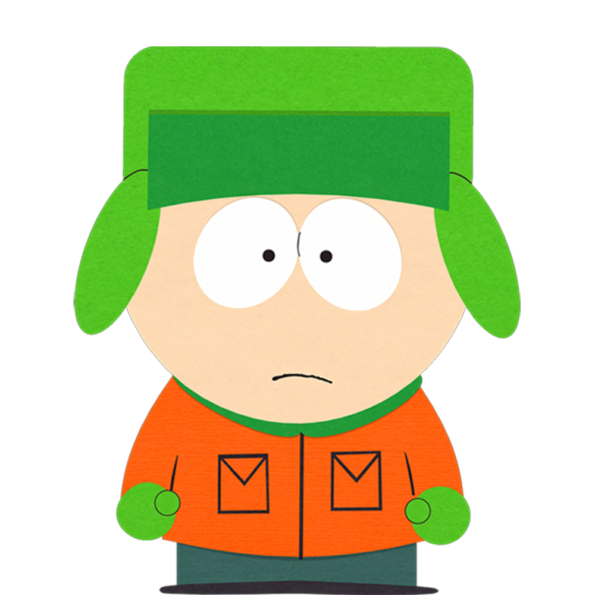
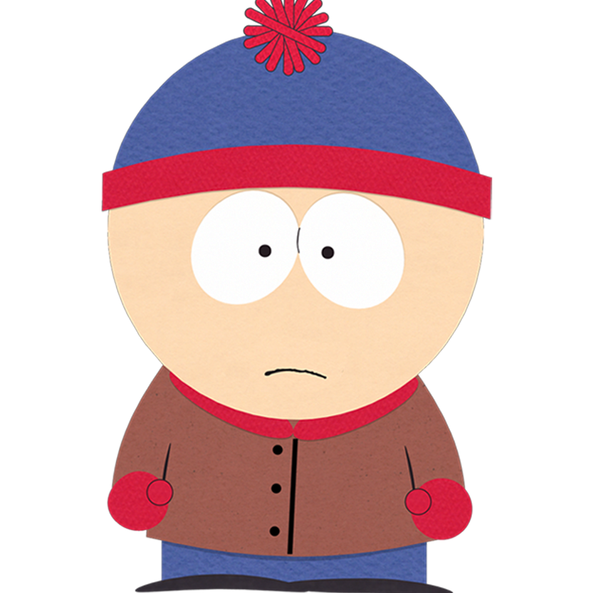
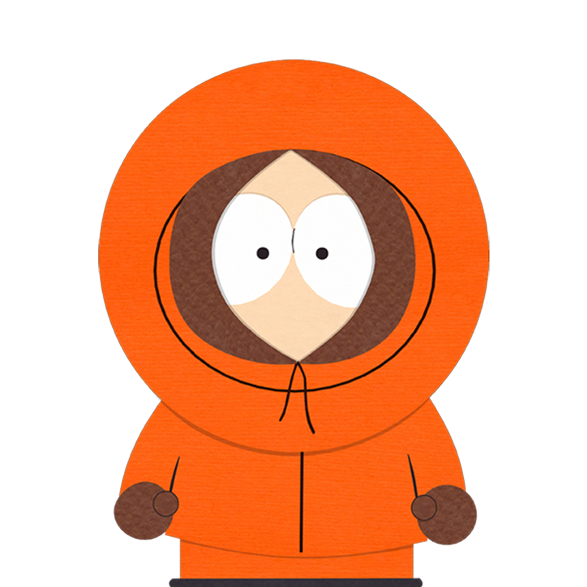
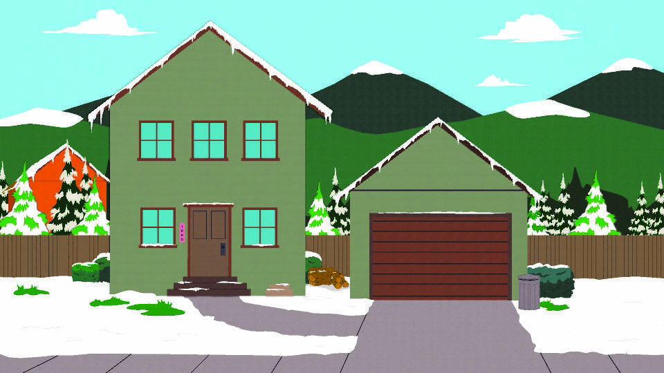
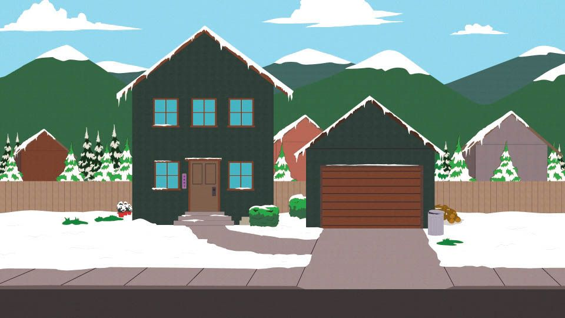
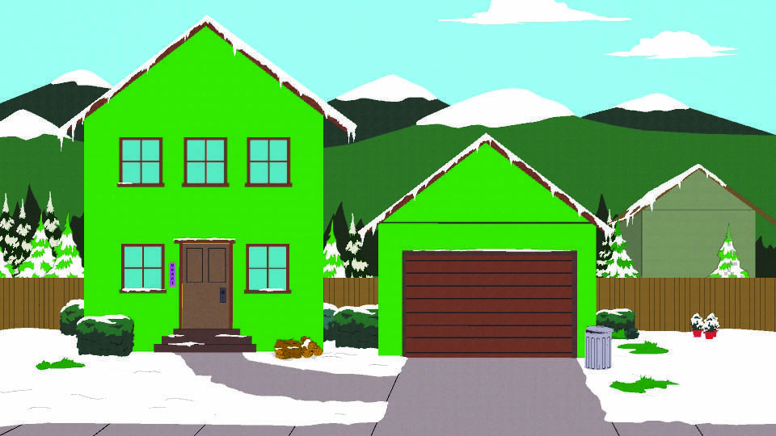
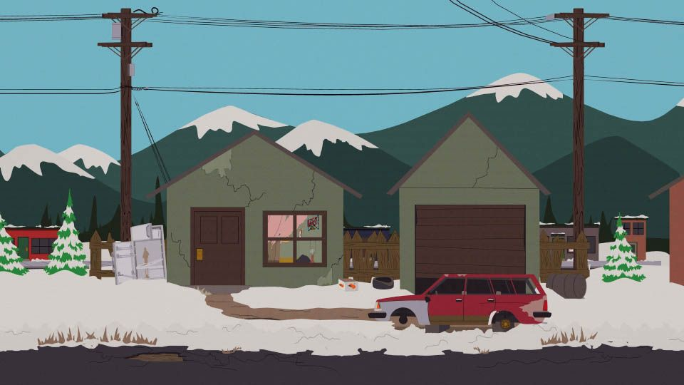
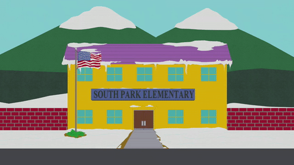
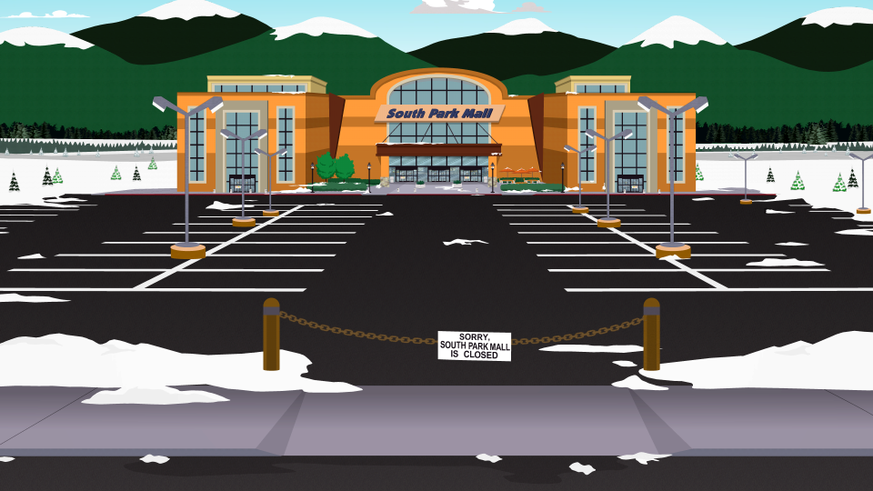
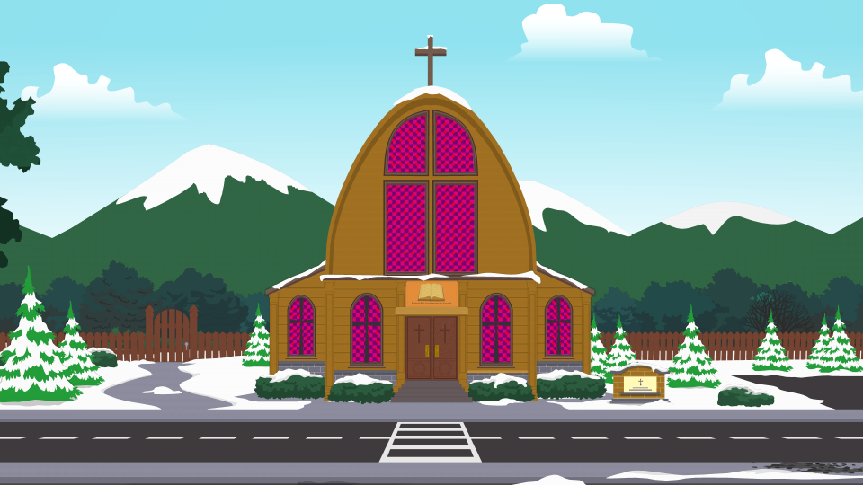

Je me rappelle de mon arrivée au Colorado quand j'avais 10 ans. C'était
dans une petite ville nommée South Park. Je fus accueillis par quatre
garçons de mon âge et nous avons vécu des tonnes d'aventures .
Ces gars s'appellent Kyle, Stan, Cartman et Kenny.
Survole les personnages pour en savoir plus sur leurs vies.

Voici Kyle fils de Gerald et Sheila Broflovsky.
Il se distingue comme l'un des rare enfant juif de la ville
et à cause de cela, il se sent souvent comme un étranger parmi
le groupe principal de personnages.

Voici Stan fils de Randy et Sharon Marsh.
Il est généralement décrit comme logique,
courageux, patient et sensible. Il exprime
ouvertement son manque d'estime pour les adultes
et leurs influences, car les résidents adultes de
South Park utilisent rarement leurs facultés critiques.
Voici Cartman fils de Liane Cartman.
Il a été dépeint comme agressif, sauvage, préjugé,
arrogant et narcissique. Il s'embrouille justement
souvent avec Kyle à cause sa religion. Il est représenté
comme l'enfant gros de la ville.

Voici Kenny fils de Stuart et Carol McCormick.
Il vient d'un ménage pauvre, présidé par son
père alcoolique et sans emploi, Stuart McCormick.
Sa mère Carol McCormick a un travail à laver la
vaisselle à l' Olive Garden. Ce personnage est surtout
connu pour ses multiples mort.
On a ici les batiments principaux de la ville :
On est ici chez Kyle dans le quartier residentiel parcelle numero 1002


Ici c'est la maison de Stan a la parcelle 2001
Puis la on est chez Cartman: 28201 E. Bonanza St.


Et pour finir avec les maisons de nos protagonistes chez Kenny: 635 Avenue de Los Mexicanos
Voici l'ecole, un des endroits que l'on visite le plus a South Park quand on a 10 ans.


N'oublions pas le centre commercial tres important
Et pour finir bienvenue a l'eglise de South Park
